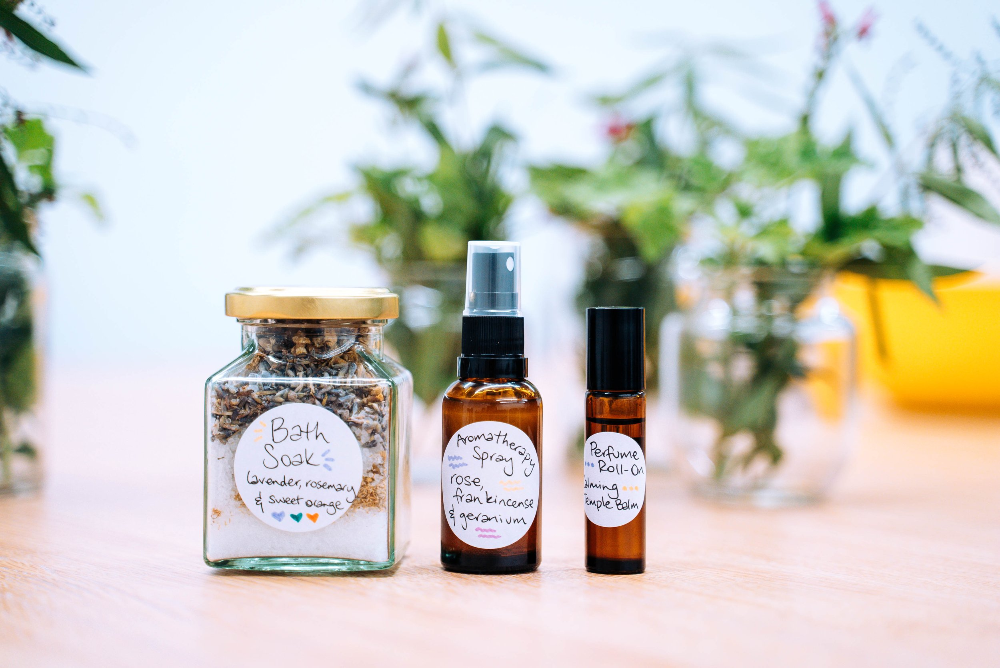
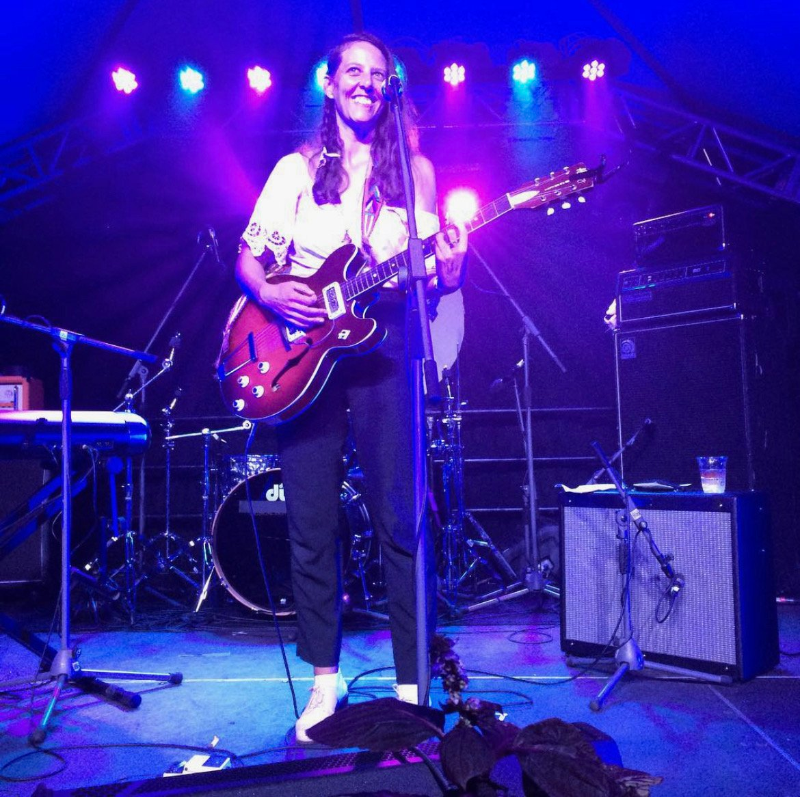

Starter: Herbal Wellbeing Masterclass
Join us for a masterclass on Herbal Wellbeing at Hackney Herbal. We will be sharing our tips and tricks for crafting your own herbal goodies. The workshop will talk you through the basics of how we turn herbs into products and you will get a chance to have a go yourself and take home what you make. You will take home a personalised lip balm, a pack of your own crafted herbal teabags, and a relaxation spray made with essential oils.
Main: The Spread Eagle Vegan Pub
The Spread Eagle, London’s first fully vegan pub based on Homerton High Street, is a quintessentially British corner pub providing sustainability in everything they do. With an emphasis on minimal waste, all food, drink, and fixtures are plant-based. The kitchen runs a seasonal menu working directly with foragers and local producers to replicate pub classics and British desserts with influences from all over the world.

Dessert: Live Performance at EartH Theatre
Jake Xerxes Fussell is a singer, guitarist, and folk music interpreter who has distinguished himself as one of his generation's preeminent interpreters of traditional (and not-so-traditional) "folk" songs. By recontextualizing ancient vernacular songs and sources of the American South, he allows them to breathe and speak for themselves.
Jennifer Castle, a Canadian songwriter, musician, and poet, creates deeply moving works, such as her latest record, Camelot. Through plainspoken lyrical detail and exhilarating full-band musical flourishes, her songs distill everyday experience into sublime celestial prayers to Mother Nature, blending art and faith seamlessly.
